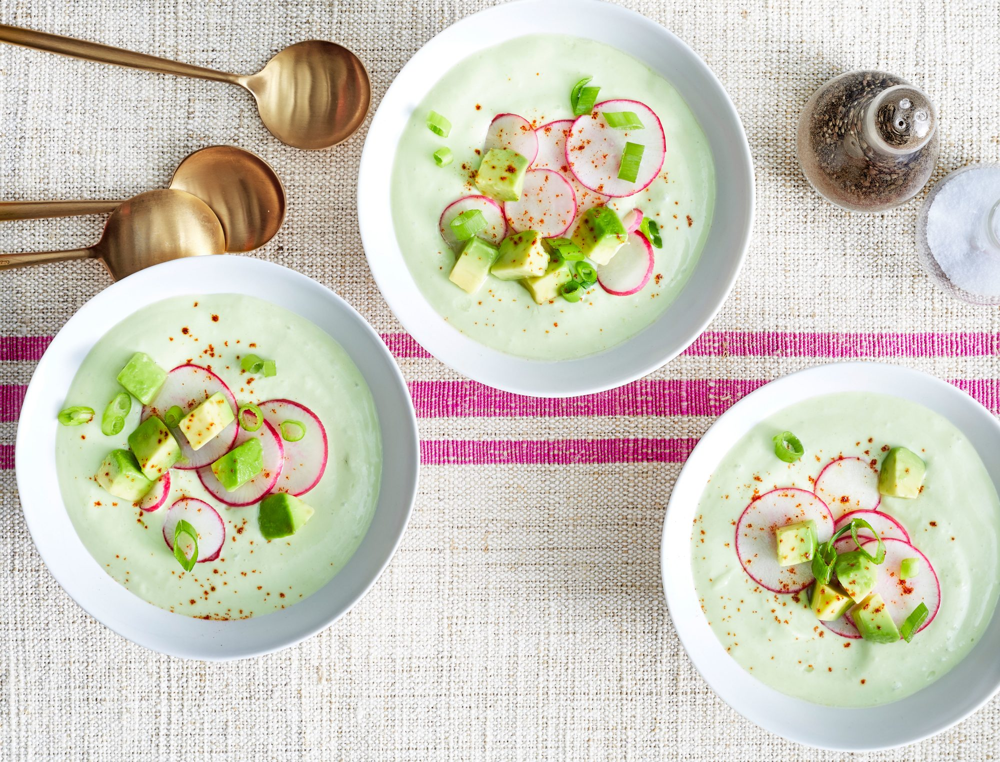

Chilled Radish-and-Avocado Soup

You’ve never tasted a soup quite like this one before! This light and refreshing dish has a peppery bite from radishes, hot sauce, and chile powder that is balanced out by creamy avocados, tangy whole buttermilk, and a little honey for sweetness.
Ingredients
- 12 ounces radishes, trimmed, divided
- 13 ripe avocados, divided
- 1 bunch scallions, divided
- 3 cups whole buttermilk, chilled, plus more as needed
- 1/4 cup lime zest plus 1/4 cup fresh juice (from 2 limes)
- 12 tablespoons honey, plus more to taste
- 1 tablespoon green pepper hot sauce (such as Cholula Green Pepper)
- 1 1/4 teaspoons kosher salt, plus more to taste
- 1/2 teaspoon ancho chile powder, plus more for garnish
Directions
- Set aside 6 radishes for serving. Coarsely chop remaining radishes, and place in a blender.
- Set aside 1 of the avocados for serving. Peel and pit remaining 2 avocados; add to blender.
- Set aside 2 of the scallions for serving. Coarsely chop remaining scallions (white and tender green parts only) to equal 1/2 cup; add to blender.
- Add buttermilk, lime zest and juice, honey, hot sauce, salt, ancho chile powder, and 2 tablespoons water to blender. Process until mixture is mostly smooth and consistency is similar to a smoothie (it will have bits of finely chopped radishes and scallions remaining), 1 1/2 to 2 minutes, adding more buttermilk if the soup is too thick.
- 1Refrigerate until chilled, at least 1 hour or up to overnight.
- 1Stir well, and taste. Add more honey, hot sauce, and/or salt to taste. Divide evenly among 4 bowls.
- Thinly slice reserved radishes and scallions, and cut reserved avocado into small cubes. Top bowls evenly with radishes, scallions, and avocado. Sprinkle with ancho chile powder. Pass the bottle of hot sauce at the ta
Go Back to Recipes